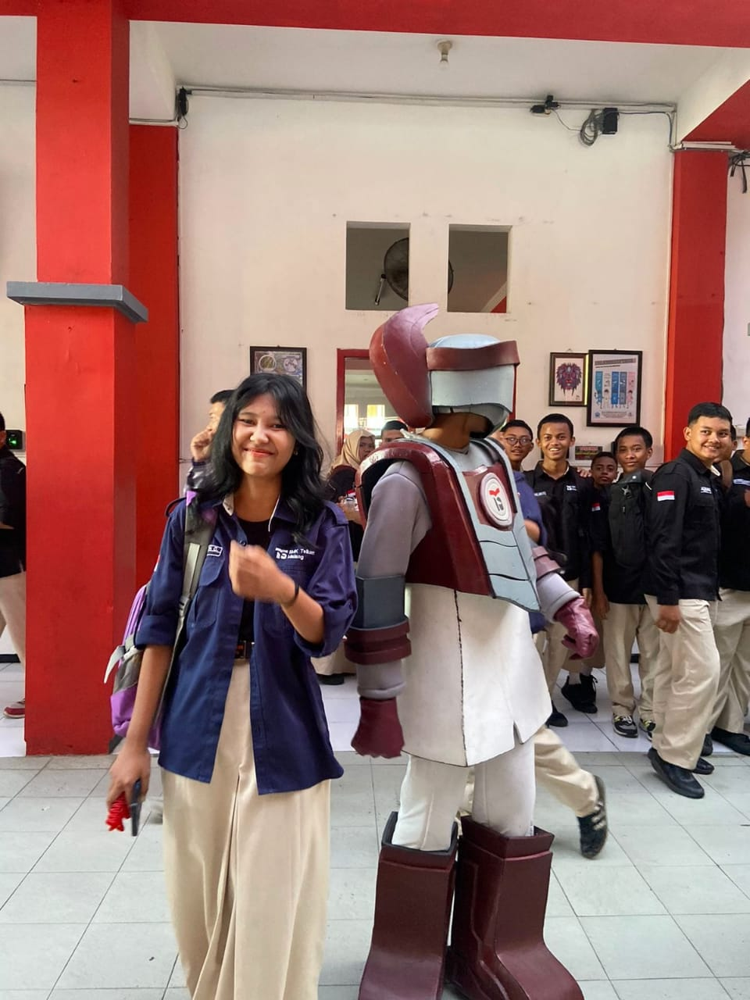

Tentang Saya

JULIA SINTA C
NIS: 00000
Tempat, Tanggal Lahir: Ngawi, 22 Juli 2007
Alamat: Malang
Email: juliasinta2289@gmail.com
No. HP: 081230087439
Hobi: Musik
Riwayat Pendidikan:- TK KARTIKA
- SDN MEJAYAN 01
- SMPN MEJAYAN 01
- SMK TELKOM MALANG
Keahlian: Bermain musik
MY SOCIAL MEDIA